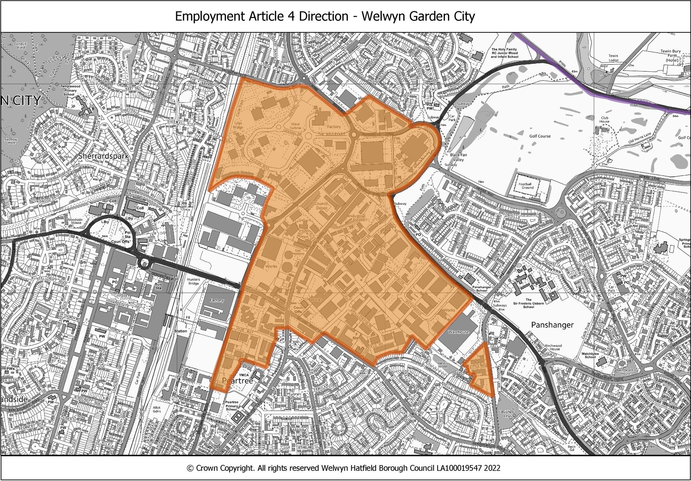
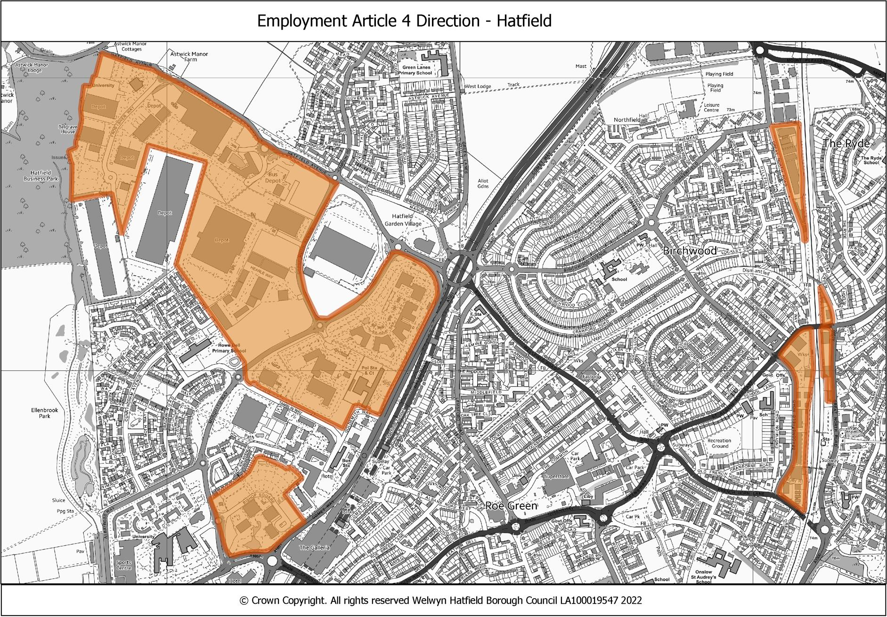
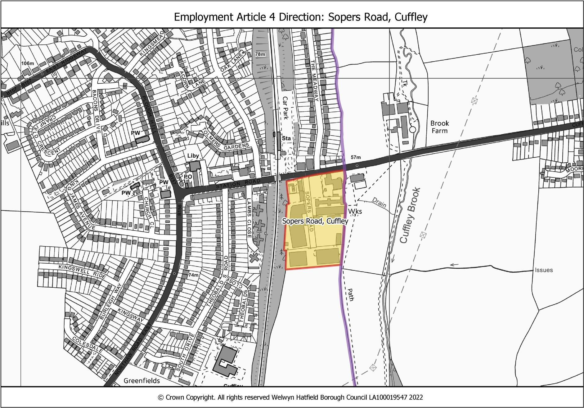

Welwyn Hatfield — tracing review, round 1
looks good
Left: the traced shapes (red) on a live map. Right: the council's map. Findings are listed under each sheet.
Map 1: Welwyn Garden City Employment Area
2 shape(s) drawn · amber = has a finding

No issues found on this sheet.
Map 2: Hatfield Business Park, Beaconsfield Road and Great North Road
5 shape(s) drawn · amber = has a finding

No issues found on this sheet.
Map 3: Sopers Road, Cuffley
1 shape(s) drawn · amber = has a finding

No issues found on this sheet.